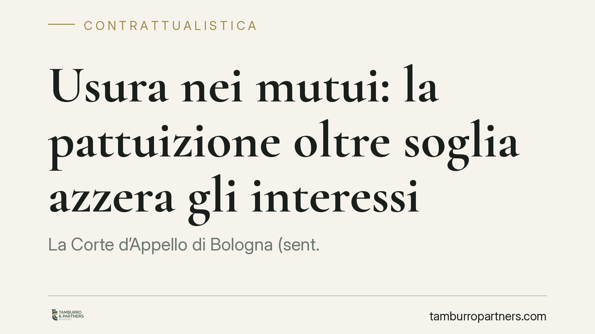

Usura nei mutui: la pattuizione oltre soglia azzera gli interessi
La Corte d'Appello di Bologna (sent. 1527/2026) torna su un nodo antico della contrattualistica bancaria: basta pattuire interessi oltre la soglia usuraria per far scattare la nullità della clausola ex art. 1815, comma 2, c.c., con conseguente azzeramento degli interessi. Il punto decisivo è che rileva la pattuizione in sé, non l'applicazione concreta. Una lettura che incide su mutui e conti correnti.

Il caso
Una società di Parma contesta all'istituto di credito la pattuizione di interessi superiori al tasso soglia antiusura. La Corte d'Appello di Bologna accoglie l'impostazione secondo cui la mera previsione contrattuale di un tasso oltre soglia è sufficiente a integrare la fattispecie, indipendentemente dal fatto che quel tasso sia stato poi effettivamente applicato al rapporto.
La conseguenza è netta: la clausola sugli interessi è nulla e il finanziamento diventa, di fatto, gratuito. Il cliente resta obbligato a restituire il solo capitale.
Inquadramento normativo
Il perno è l'articolo 1815, comma 2, del codice civile: «Se sono convenuti interessi usurari, la clausola è nulla e non sono dovuti interessi». La norma, nella sua formulazione introdotta dalla legge antiusura (L. 108/1996), prevede una sanzione civilistica particolarmente severa, perché non riduce il tasso alla soglia legale ma elimina del tutto l'onere per interessi.
Il parametro per stabilire il superamento è dato dai tassi soglia determinati trimestralmente dal Ministero dell'Economia su rilevazione della Banca d'Italia. Sul piano penale, l'articolo 644 c.p. punisce l'usura e, al quarto comma, chiarisce che per la determinazione del tasso usurario si tiene conto di commissioni, remunerazioni e spese collegate all'erogazione del credito, esclusi imposte e tasse.
La pronuncia bolognese valorizza il dato letterale dell'art. 1815 c.c. («convenuti») e la ratio di protezione: ciò che il legislatore colpisce è l'accordo usurario, non soltanto la sua esecuzione. In questa prospettiva, la cosiddetta usura "pattizia" rileva già al momento della conclusione del contratto.
Implicazioni pratiche
Per banche e intermediari il principio ha un impatto concreto sulla redazione dei contratti. Non è sufficiente applicare in concreto un tasso contenuto: se la cornice contrattuale consente, anche in via potenziale, il superamento della soglia, il rischio di nullità della clausola si sposta a monte, sulla fase di pattuizione.
Particolare attenzione va dedicata al calcolo del Teg (tasso effettivo globale) comprensivo di tutte le voci rilevanti ai sensi dell'art. 644 c.p.: oneri, commissioni, spese di istruttoria, interessi di mora laddove sommabili secondo gli orientamenti applicabili. È proprio la somma di queste componenti a far emergere il superamento non immediatamente percepibile dalla lettura del tasso nominale.
Per imprese e consumatori la decisione apre spazi di contestazione, ma richiede prudenza. L'esito dipende da una verifica tecnica puntuale: il confronto tra il costo complessivo pattuito e la soglia vigente al momento della stipula. Non ogni rimodulazione o clausola accessoria determina usura, e la giurisprudenza sul tema resta articolata, con posizioni non univoche tra merito e legittimità.
Va inoltre ricordato che una pronuncia di merito, per quanto autorevole, non vincola gli altri giudici. L'orientamento va letto nel contesto della giurisprudenza della Cassazione, che negli anni ha affrontato in modo differenziato usura originaria, usura sopravvenuta e trattamento degli interessi moratori.
Cosa fare in concreto
- Fate analizzare il contratto da un tecnico: una perizia econometrica sul Teg al momento della stipula è il presupposto di qualsiasi contestazione fondata.
- Individuate il tasso soglia corretto: verificate il decreto ministeriale del trimestre di riferimento della stipula, non quello attuale.
- Censite tutte le voci di costo: commissioni, spese e, ove rilevanti, interessi di mora vanno considerati insieme al tasso nominale.
- Valutate il rapporto costi-benefici dell'azione: considerate oneri di giudizio, tempi e incertezza dell'esito prima di agire.
- Conservate la documentazione completa: contratto, piano di ammortamento ed estratti conto sono indispensabili per la verifica.
Nota di metodo
La decisione conferma che, nella contrattualistica bancaria, il momento genetico del contratto conta tanto quanto la sua esecuzione. Monitorare l'evoluzione della giurisprudenza di legittimità è essenziale per misurare la tenuta di questo indirizzo nel tempo.
---
Contributo informativo a cura di Tamburro & Partners - Avv. Giuseppe Tamburro. Non costituisce parere legale.
Ogni contratto ha il suo equilibrio.
Se vuoi una revisione delle clausole o una redazione su misura, scrivi allo studio. Ti rispondiamo entro un giorno lavorativo.